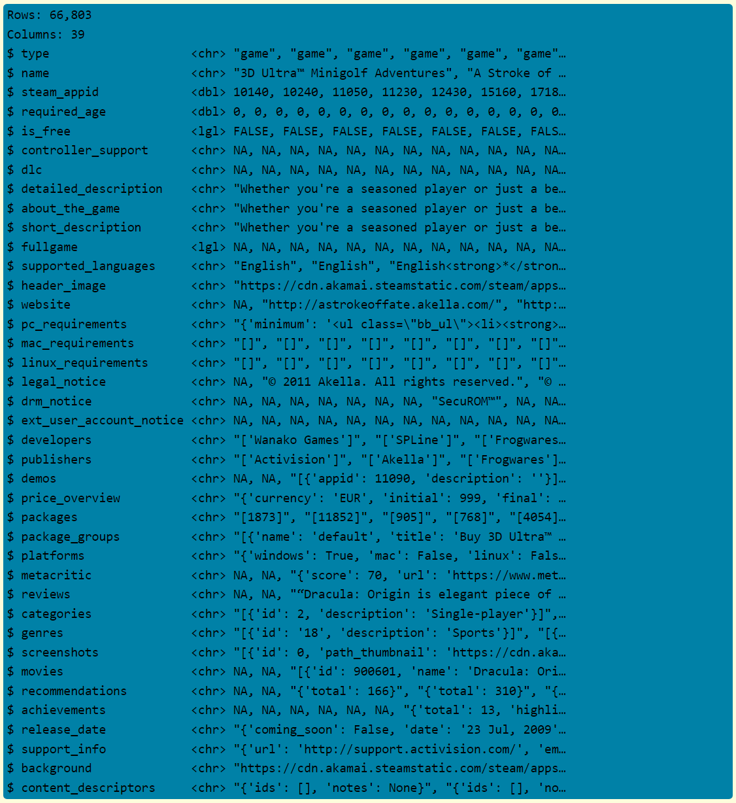
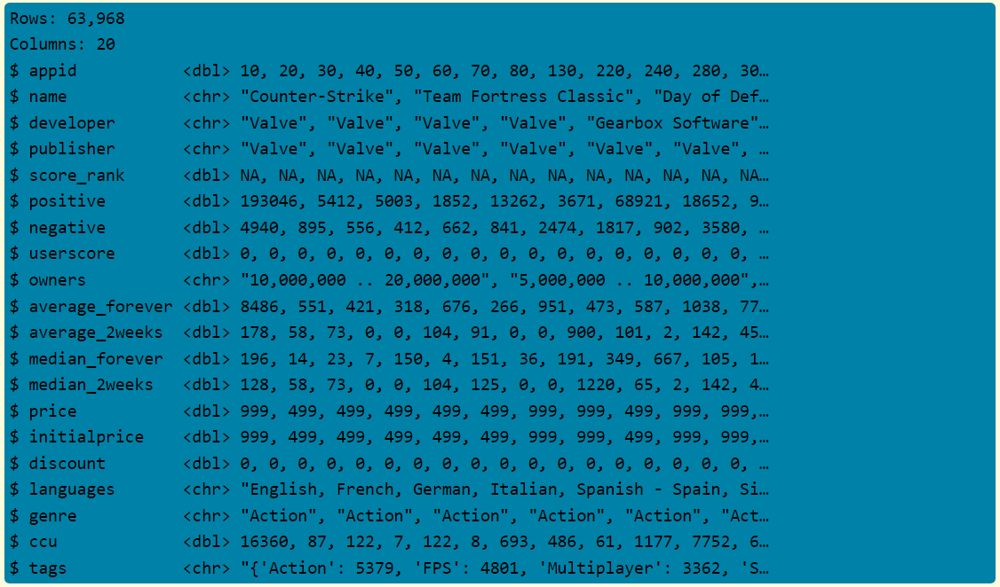
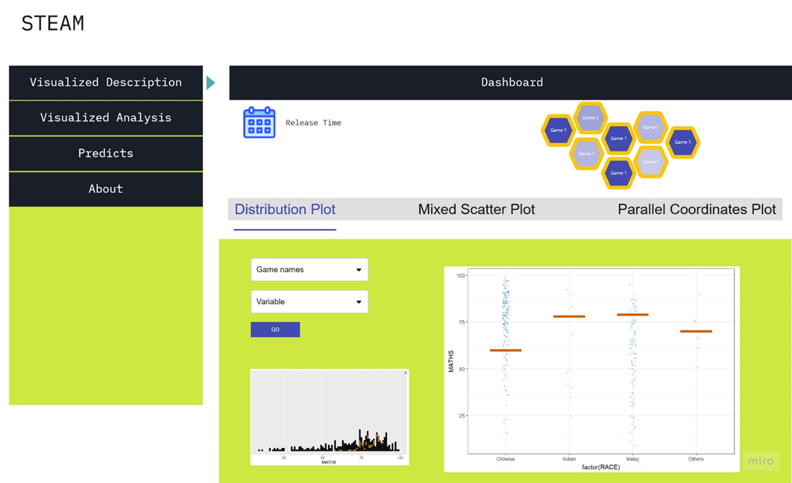
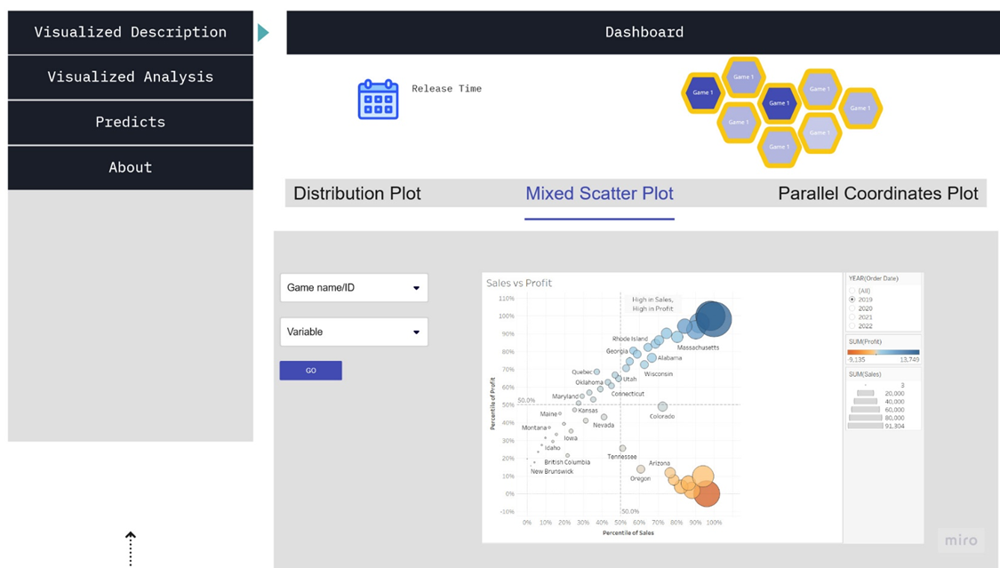
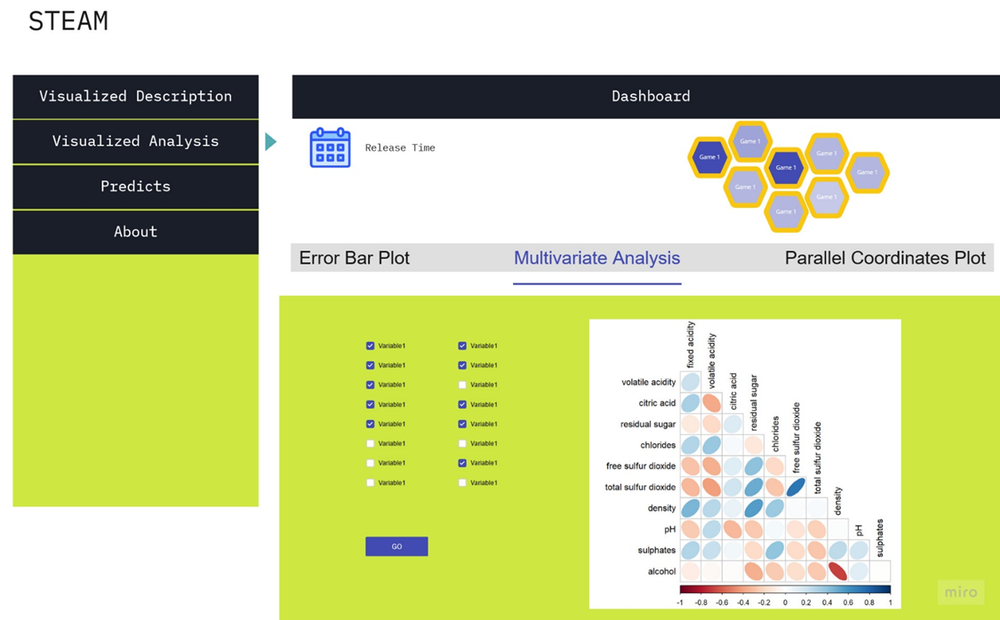
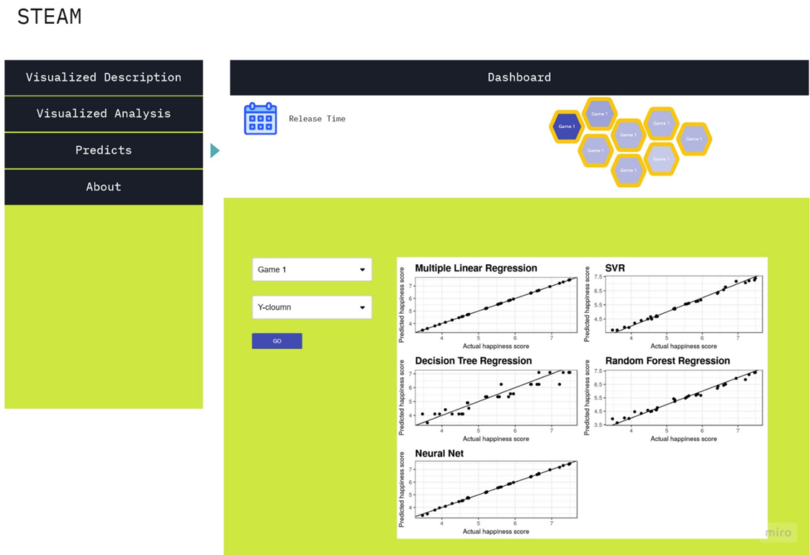

Proposal: Exploring Trends in Video Games Distributed by Steam
📢 Introduction
Background
In 2021, the video game market was estimated to be $195.65 billion and is expected to expand at a compound annual growth rate (CAGR) of 12.9% from 2022 to 2030. In comparison, One of the fastest growing categories is the digital PC games market which is estimated to grow from $10.86 billion in 2022 to $12.67 billion in 2023 at a compound annual growth rate (CAGR) of 16.7%. The COVID-19 pandemic contributed to the industry’s increased growth due to people being forced to remain indoors. This gave people the chance to explore more indoor activities, especially gaming. Several game developers also released their games for free online during this period.
Steam is a major digital game distribution platform run by the Valve Corporation. It was originally released in 2003 as a way for Valve release updates for their own developed games, but eventually evolved into a publisher for third-party games. The platform accounts for 75% of the global PC games market. In 2020, Steam had 120 million active users per month, averaging 62.6 million people use Steam every day. This growth resulted in the number of hours spent playing games on Steam climbing by 50.7% year over year, and game sales increased by nearly 21.4%.
Objective
The objective of the project is to visualize the historical and current field of the online PC games. Given that Steam already accounts for 75% of the PC games market, the dataset used will be focused on games in the Steam platform. We aim to achieve insights by exploring the relationships between demand, pricing, tags and reviews. This may be of help to any third party developers wanting to publish on Steam or anyone interested in investing into the video game industry to achieve an understanding.
📁 Data
Data Source
The data to be used was acquired from Kaggle updated last 2022. It is comprised of two datasets namely, steamspy_data.csv and steam_app_data.csv which will be used in this proposed study and Shiny app.
Data Composition
Using the glimpse() function of the dplyr package, the following figures contain the columns and sample values for the mentioned datasets.
steam_app_data.csv

steamspy_data.csv

📋 Methodology
Packages
The following packages are required to perform the visualizations in the next section.
tidyverse- A collection of R packages designed for data scienceggtatsplot- An extension of ggplot2 package for creating graphics with details from statistical tests included in the plotsplotly- To build interactive graphGGally– An extension to ggplot2 package by adding several functions to reduce the complexity of combining geoms with transformed dataggdist- is an R package that provides a flexible set of ggplot2 geoms and stats designed especially for visualising distributions and uncertainty.
Visualizations
The following visual analytics methods will be applied for analysis in our study and Shiny app.
Descriptive Analysis
Interactive bar and histogram plots
Interactive combined line-scatter-box plot
Parallel coordinates plot
Statistical Analysis
Error bar plot
Interactive correlogram
ANOVA Test plot
Predictive Analysis
Linear regression plot with prediction interval
Regression plot (if time permits)
Storyboard Draft
The figures below are drafts for the proposed Shiny app.



